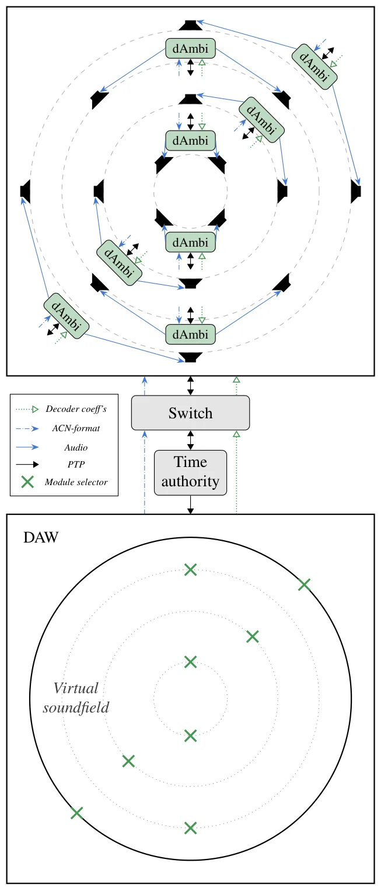
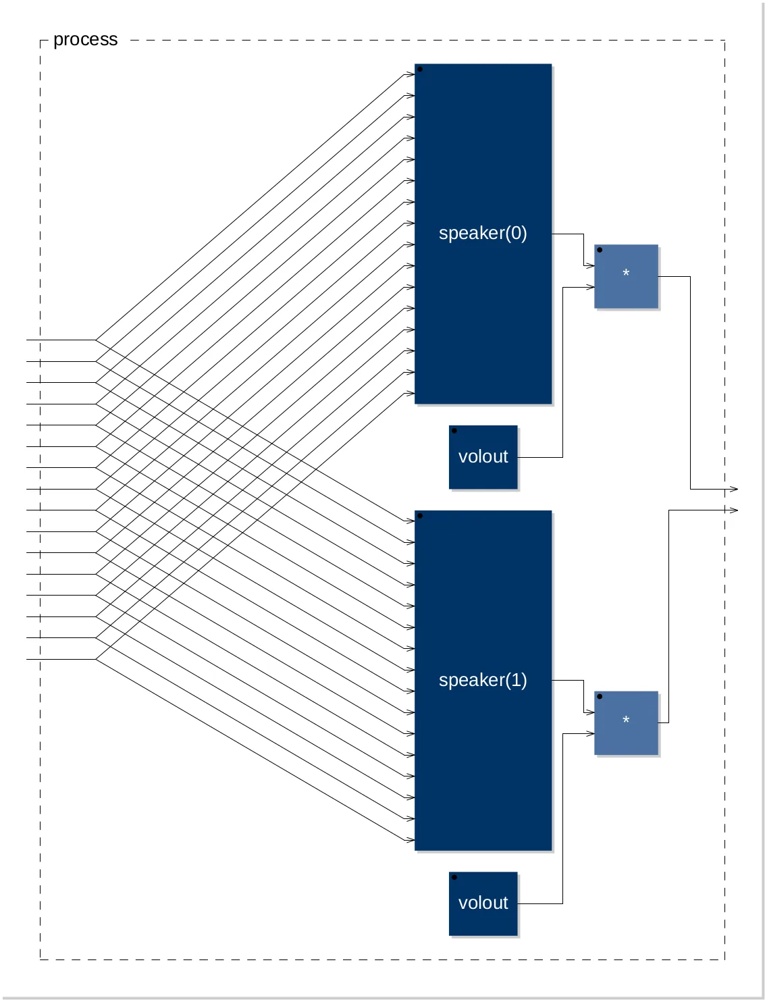

O Custo Proibitivo do Áudio Espacial Imersivo
Os sistemas de áudio espacial e imersivo de grande escala, como a síntese de campo de ondas (WFS) e o Ambisonics de Alta Ordem (HOA), permanecem como commodities exclusivas. O custo dos alto-falantes, embora possa ser mitigado com soluções DIY, é apenas uma parte do problema. O verdadeiro barreira de entrada é o hardware de suporte: interfaces de áudio multicanal de alta qualidade e sistemas de processamento digital de sinal (DSP) centralizados e potentes. Esses componentes são frequentemente proibitivamente caros para pesquisadores, artistas e entusiastas que desejam explorar o áudio tridimensional.
Recentemente, houve esforços na comunidade acadêmica e de makers para reduzir essas barreiras. Aproveitando avanços na computação embarcada, áudio em rede e uma mentalidade de frugalidade, sistemas experimentais de baixo custo foram desenvolvidos. No entanto, muitas soluções ainda dependem de arquiteturas centralizadas ou não exploram plenamente a natureza paralelizável dos algoritmos de decodificação de Ambisonics. Este paper, de Thomas A. Rushton e colaboradores da Inria e do INSA Lyon, propõe uma abordagem distribuída que desafia o status quo comercial.
A Ideia Central: Distribuição e Paralelismo
A proposta central é substituir um único DSP centralizado por uma rede modular de dispositivos baseados em microcontroladores (MCUs) de baixo custo. O insight fundamental é que o processo de decodificação de Ambisonics é altamente paralelizável. Em vez de um único processador calcular a saída para todos os alto-falantes, a carga de trabalho é dividida entre vários módulos, cada um responsável por um subconjunto das saídas dos alto-falantes.
Essa abordagem não apenas reduz o custo do hardware de processamento, mas também aumenta a escalabilidade e a modularidade do sistema. A redundância é minimizada, e o framework se torna flexível para reproduzir campos sonoros espaciais. Os autores demonstram a viabilidade dessa abordagem com uma implementação de Ambisonics de Terceira Ordem, sugerindo potencial de escalabilidade para ordens mais altas, como a Quinta Ordem.

Arquitetura do Sistema: Do Plugin ao Hardware
O sistema proposto consiste em dois componentes principais: um plugin para Estação de Trabalho de Áudio Digital (DAW) e uma rede síncrona de módulos hardware chamados 'dAmbi'. O plugin DAW é responsável pelo design do campo sonoro virtual. Ele permite ao usuário selecionar os módulos dAmbi que compõem a rede de alto-falantes. A partir dessa configuração, o plugin calcula os coeficientes de decodificação de Ambisonics e codifica o áudio no formato ACN (Ambisonic Channel Number).
Transmissão de Dados e Sincronização
Os dados transmitidos pela rede incluem tanto os coeficientes de decodificação quanto o áudio em si. A transmissão ocorre através de um switch de rede padrão. Um aspecto crítico para o sucesso dessa arquitetura distribuída é a sincronização temporal. Como os módulos estão fisicamente separados e processam sinais em tempo real, qualquer desalinhamento de tempo resultaria em artefatos audíveis e degradação da imagem sonora.
Para resolver isso, o sistema utiliza o IEEE 1588 Precision Time Protocol (PTP). O PTP é um protocolo de rede projetado para sincronização de relógio de precisão submicrossegundo em redes locais. Os autores complementam o PTP com correção adaptativa de relógio para manter o alinhamento entre os dispositivos. Isso garante que os sinais de áudio cheguem aos alto-falantes no momento exato, independentemente das variações de latência da rede ou dos osciladores internos dos microcontroladores.
Implementação nos Módulos dAmbi
Cada módulo dAmbi executa uma parte da decodificação de Ambisonics. O código de processamento é implementado usando a linguagem Faust, uma linguagem de programação funcional especializada para síntese de sinais e processamento de áudio. O diagrama de blocos do decodificador HOA em um módulo mostra como as entradas de coeficientes são processadas para gerar saídas de volume controlado para os alto-falantes conectados a esse módulo específico.

O Algoritmo de Decodificação Distribuído
Na prática, o plugin DAW calcula a matriz de decodificação completa para a ordem de Ambisonics desejada (neste caso, Terceira Ordem). Essa matriz é então particionada. Cada módulo dAmbi recebe apenas as linhas da matriz correspondentes aos alto-falantes que ele controla. O áudio ACN, que representa o campo sonoro em termos de funções base esféricas, é broadcast para todos os módulos na rede.
Por que Microcontroladores?
A escolha de microcontroladores de baixo custo, em vez de DSPs dedicados ou CPUs de desktop, é intencional. Os autores argumentam que o custo do hardware de interface de áudio multicanal e do processamento centralizado é o principal fator limitante. Ao usar MCUs, o custo por canal de saída é drasticamente reduzido. Além disso, a computação embarcada moderna é suficientemente poderosa para realizar as operações de multiplicação e soma necessárias para a decodificação de Ambisonics de ordens moderadas em tempo real, desde que a carga seja distribuída.
Resultados: Implementação de Terceira Ordem
Os autores demonstram a viabilidade da abordagem através de uma instalação de Ambisonics de Terceira Ordem. Esta ordem permite a reprodução de campos sonoros mais complexos e direcionais do que as ordens mais baixas (como a Primeira ou Segunda Ordem). O sistema conseguiu reproduzir o campo sonoro virtual com precisão, mantendo a sincronização temporal necessária para uma experiência imersiva coerente.
Limitações e Desafios
É importante notar o que o paper NÃO mostra. A implementação demonstrada é de Terceira Ordem. Embora os autores sugiram potencial de escalabilidade para a Quinta Ordem, os resultados detalhados para ordens mais altas não são o foco principal da demonstração inicial. Além disso, a configuração e a calibração do sistema podem ser complexas. A necessidade de sincronização precisa exige uma infraestrutura de rede adequada (switches compatíveis com PTP) e configuração cuidadosa.
Implicações para Pesquisa e Arte
Esta abordagem democratiza o acesso ao Ambisonics de Alta Ordem. Para pesquisadores, significa que experimentos com áudio espacial não precisam depender de orçamentos elevados ou infraestrutura dedicada. Para artistas sonoros, abre a possibilidade de criar instalações imersivas em espaços maiores com um número maior de alto-falantes, sem o custo proibitivo de sistemas comerciais. A natureza modular também permite que o sistema seja adaptado a diferentes configurações de alto-falantes de forma flexível.
Conclusão: Um Passo em Direção à Acessibilidade
O paper 'Ambisonics: Introducing an Accessible, Distributed Approach' apresenta uma contribuição significativa para a área de áudio espacial. Ao combinar processamento distribuído, sincronização de rede precisa e hardware de baixo custo, os autores demonstram que sistemas de alta fidelidade não precisam ser exclusivos. Embora desafios de configuração e escalabilidade para ordens muito altas permaneçam, este trabalho estabelece uma base sólida para o desenvolvimento de soluções frugais e acessíveis para áudio imersivo. O futuro do áudio espacial pode não estar em servidores centralizados caros, mas em redes inteligentes de dispositivos simples.
O que fica
- Substitui DSPs centralizados caros por uma rede de microcontroladores de baixo custo, dividindo a carga de processamento.
- Utiliza o protocolo IEEE 1588 PTP para sincronização submicrossegundo, essencial para a coerência do áudio distribuído.
- Implementação demonstrada em Terceira Ordem, mostrando viabilidade e potencial de escalabilidade para ordens mais altas.
- Reduz drasticamente a barreira de entrada para pesquisa e arte em áudio espacial imersivo.
Paper original: Ambisonics: Introducing an Accessible, Distributed Approach
Comentários
Nenhum comentário ainda. Seja o primeiro.